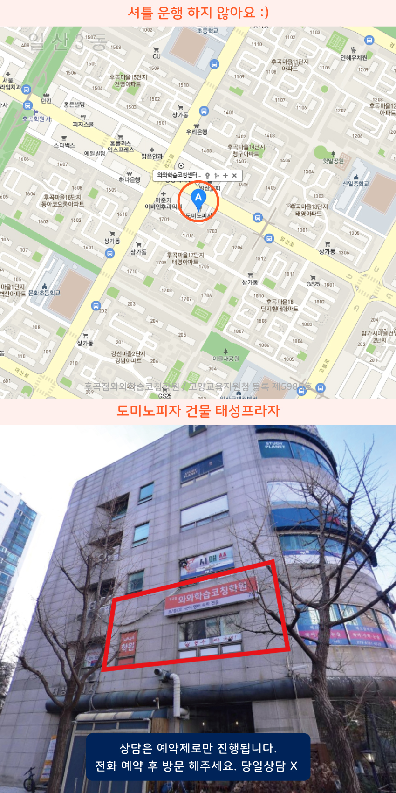

Area
일산동 초등수학학원
일산동에서 초등수학학원을 찾는다면 먼저 학습 진단을 통해 연산과 개념이 어디서 흔들리는지 확인하는 과정이 있는지 보시면 좋아요. 후곡과 후곡마을처럼 통학 동선이 가까운 곳이라면 수업 후 복습 루틴을 잡아 주는지도 중요합니다. 일산후곡 지역 학원들은 단계별 문제풀이로 실수를 줄이고 다음 단원으로 자연스럽게 이어가도록 지도합니다.
일산동 초등수학학원은 초등·중등·고등 내신대비를 바탕으로 개별진도 학습관리와 코칭을 제공합니다. 수학을 중심으로 영어·국어 학습까지 체계적으로 지도합니다.
무료 레벨테스트 신청하기Area
일산동에서 초등수학학원을 찾는다면 먼저 학습 진단을 통해 연산과 개념이 어디서 흔들리는지 확인하는 과정이 있는지 보시면 좋아요. 후곡과 후곡마을처럼 통학 동선이 가까운 곳이라면 수업 후 복습 루틴을 잡아 주는지도 중요합니다. 일산후곡 지역 학원들은 단계별 문제풀이로 실수를 줄이고 다음 단원으로 자연스럽게 이어가도록 지도합니다.
Schools
일산동 초등학생은 신촌초부터 개념 수업과 기초 연산과 서술형을 탄탄히 하고 체계적으로 신일중과 오마중 내신 대비에 이어 저동고 진학 준비까지 돕습니다.
Academy
최근 과제는 해 오는데 점수가 제자리인 학생을 보면, 대개 계산은 했지만 문제를 해석하는 습관이 약한 경우가 많습니다. 일산동 초등수학학원에서는 같은 유형이라도 문장 속 조건을 먼저 표시하고, 어떤 식을 세우는지까지 과정으로 정리하는 연습을 시킵니다. 특히 후곡마을과 일산후곡처럼 주변 학습지원을 병행하는 학생일수록, 수업 후에 오답이 남는데도 다음 단원으로 넘어가며 반복되는 실수가 쌓이기 쉽습니다.
일산동 초등학생수학학원에서는 신촌초, 율동초, 신일초, 문화초, 저동초, 오마초 주변 학생들이 학습 내용을 오래 기억하도록 개념 확인과 비슷한 문제의 비교를 함께 진행합니다. 틀린 이유를 단순 실수로만 끝내지 않고, 식의 선택 근거와 단위, 조건의 누락 여부를 체크해 다음 문제에서 같은 오류가 나오지 않게 관리합니다.
중등으로 넘어가면 신일중, 오마중, 저동중 시기에 단원 간 연결이 빨라져서 기초가 약한 부분이 그대로 성적에 드러납니다. 그 흐름을 준비하려면 고등 진로가 정해진 뒤에도 흔들리지 않도록 저동고, 정발고뿐 아니라 신일비즈니스고 연계 학습에서 기초 연산과 서술형 대비를 꾸준히 가져가는 방식이 중요합니다. 마지막으로 학원을 고를 때는 수업 뒤 오답 점검이 실제로 이루어지는지, 학생이 스스로 점검할 수 있는 습관을 만드는지, 그리고 초등부터 중등까지 연결해 학습 계획을 설명해주는지를 기준으로 살펴보세요.

Programs

목표 점수와 시험 일정을 기준으로 주간 학습량을 설계하고, 매일 실천 가능한 플래너 루틴을 잡아줍니다.

학생별 이해도에 맞춘 개념 설명, 유형 적용, 반복 훈련, 오답 정리로 부족한 단원을 보완해나갑니다.

하원 이후에도 과제 수행률 확인과 학원 밖 공부 습관까지 이어갑니다.


자기주도학습력을 형성 시킬 수 있도록 플랜, 학습, 숙제관리가 들어갑니다.

Map

Apply
순차적으로 연락드려 예약 도와드립니다.
Guide
| 횟수 | 초등 | 중등 | 고등 |
|---|---|---|---|
| 주 5회 | 339,000원 | 336,000원 | 419,000원 |
| 주 4회 | 279,000원 | 301,000원 | 344,000원 |
| 주 3회 | 219,000원 | 236,000원 | - |
| 횟수 | 초등 | 중등 | 고등 |
|---|---|---|---|
| 주 5회 | 389,000원 | 416,000원 | 469,000원 |
| 주 4회 | 319,000원 | 341,000원 | 384,000원 |
| 주 3회 | 249,000원 | 266,000원 | - |
학년, 과목, 수업 시수, 지역에 따라 수업료가 달라질 수 있습니다.
초등수학의 기본이 되는 덧셈, 뺄셈, 곱셈, 나눗셈부터 학년별 필수 연산을 체계적으로 학습합니다. 단순히 계산 속도를 높이는 것보다 정확한 계산 원리를 이해하고 반복 연습을 통해 실수를 줄이며 탄탄한 수학 기초를 만들어갑니다.
문제에 제시된 조건을 정확하게 읽고 필요한 정보를 찾아 식으로 표현하는 연습을 진행합니다. 다양한 생활 속 수학 문제를 활용해 사고력을 키우고, 풀이 과정을 스스로 설명하며 응용 문제에도 자신감을 가질 수 있도록 지도합니다.
학생의 학년과 현재 개념 이해도, 문제 해결 수준을 확인한 뒤 적절한 학습 단계를 설정합니다. 부족한 단원은 다시 복습하고 충분히 익힌 내용은 심화 및 선행학습으로 연결해 학생마다 알맞은 속도로 수학 실력을 키워갑니다.